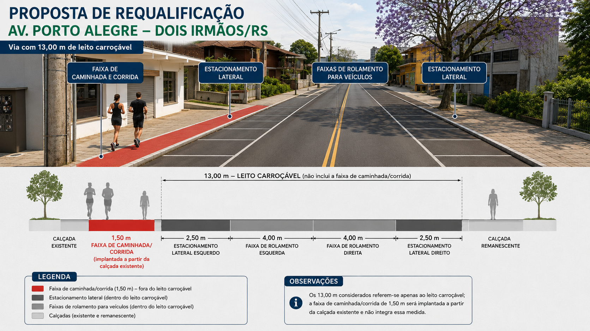
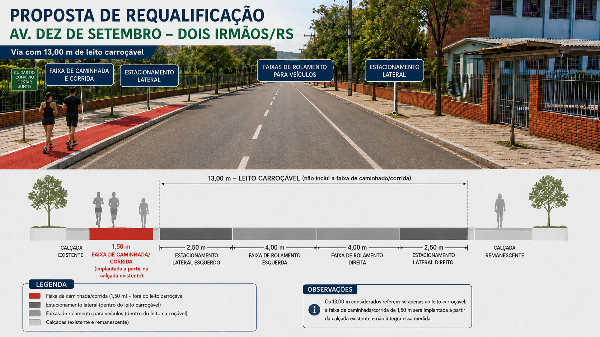

Segurança
Separação visual clara entre áreas de circulação, estacionamento e prática de atividade física.
Uma proposta para qualificar vias urbanas com espaços seguros e contínuos para atividade física, sem ignorar a circulação de veículos e a realidade já existente nas cidades.
Muitas vias possuem espaço viário relevante, mas pouco aproveitamento para deslocamentos ativos e prática de exercícios. A proposta busca transformar parte desse espaço em infraestrutura simples, segura e acessível.
Separação visual clara entre áreas de circulação, estacionamento e prática de atividade física.
Mais pessoas podem caminhar e correr perto de casa, sem depender de parques distantes.
Infraestrutura urbana pode reduzir barreiras e estimular hábitos mais ativos no dia a dia.
O conceito prevê a implantação de uma faixa contínua de aproximadamente 1,5 metro em trechos tecnicamente viáveis, utilizando parte do espaço disponível junto à lateral da via e mantendo a circulação veicular.
A implantação deve ser adaptada à largura real de cada rua, às calçadas existentes, ao estacionamento, à drenagem, à acessibilidade e às condições de segurança do local.
As simulações abaixo aplicam o conceito em duas vias de Dois Irmãos, mantendo os 13,00 m do leito carroçável e implantando a faixa de caminhada e corrida a partir da calçada existente.

Faixa de caminhada e corrida à esquerda, estacionamento lateral nos dois lados e duas faixas de rolamento para veículos.

Aplicação do mesmo modelo em outro trecho urbano, com mobilidade ativa, estacionamento lateral e circulação organizada de veículos.
As simulações têm caráter ilustrativo. A implantação real depende de análise técnica, medições de campo e validação operacional.
Um espaço definido reduz conflitos e aumenta a previsibilidade de uso da via.
A proximidade da infraestrutura facilita a criação de hábitos e amplia o acesso.
Ruas deixam de ser apenas corredores de veículos e passam a atender diferentes usos.
A proposta pode começar em corredores prioritários e ser expandida conforme resultados e viabilidade.
O objetivo é apresentar uma ideia concreta para ampliar os espaços destinados à mobilidade ativa, à atividade física e à convivência urbana, com implantação gradual e adaptação à realidade de cada via.
Proposta para criação de uma rede municipal de mobilidade ativa, esporte e micromobilidade em Dois Irmãos.
Fica instituída, no âmbito do Município de Dois Irmãos, a Rede Municipal de Mobilidade Ativa, Esporte e Micromobilidade, destinada à criação, qualificação e integração de espaços públicos voltados à caminhada, corrida, ciclismo e circulação segura de equipamentos de mobilidade individual.
São objetivos desta Lei:
I – incentivar a prática regular de atividade física e os deslocamentos ativos;
II – ampliar a segurança de pedestres, corredores, ciclistas e usuários de equipamentos de micromobilidade;
III – promover o uso compartilhado, organizado e democrático do espaço urbano;
IV – integrar ações de mobilidade urbana, saúde, esporte, lazer, acessibilidade e sustentabilidade;
V – estimular a implantação gradual de infraestrutura de baixo custo e alto impacto social.
Para os fins desta Lei, considera-se:
I – mobilidade ativa: deslocamento realizado predominantemente por esforço humano;
II – faixa de caminhada e corrida: espaço sinalizado e destinado prioritariamente ao deslocamento a pé e à prática de corrida;
III – faixa de micromobilidade: espaço destinado à circulação de bicicletas e demais equipamentos de mobilidade individual permitidos pela legislação aplicável;
IV – corredor prioritário: via ou conjunto de vias selecionadas para implantação inicial da Rede Municipal;
V – implantação temporária: intervenção reversível utilizada para testes, eventos ou avaliação de soluções urbanas.
O Poder Público poderá implantar faixas destinadas à caminhada e à corrida em vias urbanas tecnicamente adequadas, mediante sinalização horizontal, vertical, elementos de segregação ou outras soluções compatíveis com a segurança viária.
A largura das faixas de caminhada e corrida será definida por estudo técnico, observadas as características da via, a demanda de usuários, a acessibilidade, a drenagem, a segurança e a preservação da circulação local.
Parágrafo único. Sempre que tecnicamente viável, poderá ser adotada largura de referência de 1,50 m, sem prejuízo da implantação de soluções distintas quando as condições locais assim exigirem.
As faixas de caminhada e corrida deverão, sempre que possível:
I – possuir continuidade nos trechos implantados;
II – apresentar sinalização clara e facilmente compreensível;
III – reduzir conflitos com acessos de imóveis, pontos de ônibus, estacionamentos e cruzamentos;
IV – preservar as condições de acessibilidade das calçadas e travessias;
V – priorizar materiais e soluções de fácil manutenção.
O Município poderá implantar, ampliar ou integrar faixas destinadas à circulação de bicicletas e equipamentos de mobilidade individual, em conformidade com a legislação de trânsito e com as normas técnicas aplicáveis.
As faixas de micromobilidade poderão ser implantadas de forma permanente, experimental, temporária ou compartilhada, conforme avaliação técnica da via e dos fluxos existentes.
A implantação das estruturas previstas neste Capítulo deverá priorizar a continuidade da rede, a conexão entre bairros, equipamentos públicos, áreas comerciais, escolas, parques e demais polos geradores de deslocamentos.
A circulação de bicicletas, bicicletas elétricas, patinetes e demais equipamentos de mobilidade individual observará os limites, condições e regras estabelecidos pela legislação federal e pela regulamentação municipal.
O Município poderá promover campanhas educativas voltadas à convivência segura entre pedestres, corredores, ciclistas, usuários de equipamentos de micromobilidade e condutores de veículos automotores.
A definição das vias integrantes da Rede Municipal de Mobilidade Ativa, Esporte e Micromobilidade será precedida de análise técnica que considere, entre outros fatores:
I – largura da via e das calçadas existentes;
II – volume e velocidade do tráfego;
III – presença e demanda de estacionamento;
IV – segurança em cruzamentos e acessos;
V – topografia, drenagem e condições do pavimento;
VI – circulação de transporte coletivo e veículos de emergência;
VII – potencial de conexão com outros trechos da rede.
A implantação poderá ocorrer de forma gradual, por etapas e corredores prioritários, conforme disponibilidade técnica, orçamentária e operacional do Município.
As intervenções poderão utilizar pintura viária, sinalização, tachões, balizadores, segregadores, elementos paisagísticos, mobiliário urbano ou outras soluções tecnicamente adequadas.
O Município poderá realizar projetos-piloto e intervenções temporárias para avaliar segurança, adesão da população, impacto no trânsito e necessidade de ajustes antes da implantação definitiva.
O Poder Público poderá instituir Ruas de Lazer, mediante restrição total ou parcial do tráfego motorizado em dias e horários definidos, para atividades de caminhada, corrida, ciclismo, recreação, esporte, cultura e convivência comunitária.
A definição das Ruas de Lazer deverá considerar a segurança dos usuários, os acessos locais, a circulação de moradores, os serviços de emergência e o impacto sobre a mobilidade do entorno.
O Município poderá estabelecer calendário periódico para as Ruas de Lazer e promover ações conjuntas com entidades comunitárias, esportivas, educacionais e de saúde.
A gestão da Rede Municipal poderá ser realizada de forma integrada entre os órgãos municipais responsáveis por mobilidade, trânsito, obras, planejamento, saúde, esporte, lazer e meio ambiente.
O Poder Executivo poderá estabelecer critérios técnicos, padrões de sinalização, prioridades de implantação e procedimentos de manutenção por meio de regulamentação.
O Município poderá disponibilizar canais para recebimento de sugestões da comunidade quanto à escolha de vias, avaliação dos trechos implantados e proposição de melhorias.
O uso irregular das faixas e espaços instituídos por esta Lei sujeitará o infrator às medidas previstas na legislação de trânsito e nas demais normas municipais aplicáveis.
As despesas decorrentes da execução desta Lei correrão por conta de dotações orçamentárias próprias, suplementadas se necessário, podendo o Município buscar recursos estaduais, federais, emendas, convênios, parcerias e outras fontes legalmente admitidas.
Esta Lei entra em vigor na data de sua publicação.